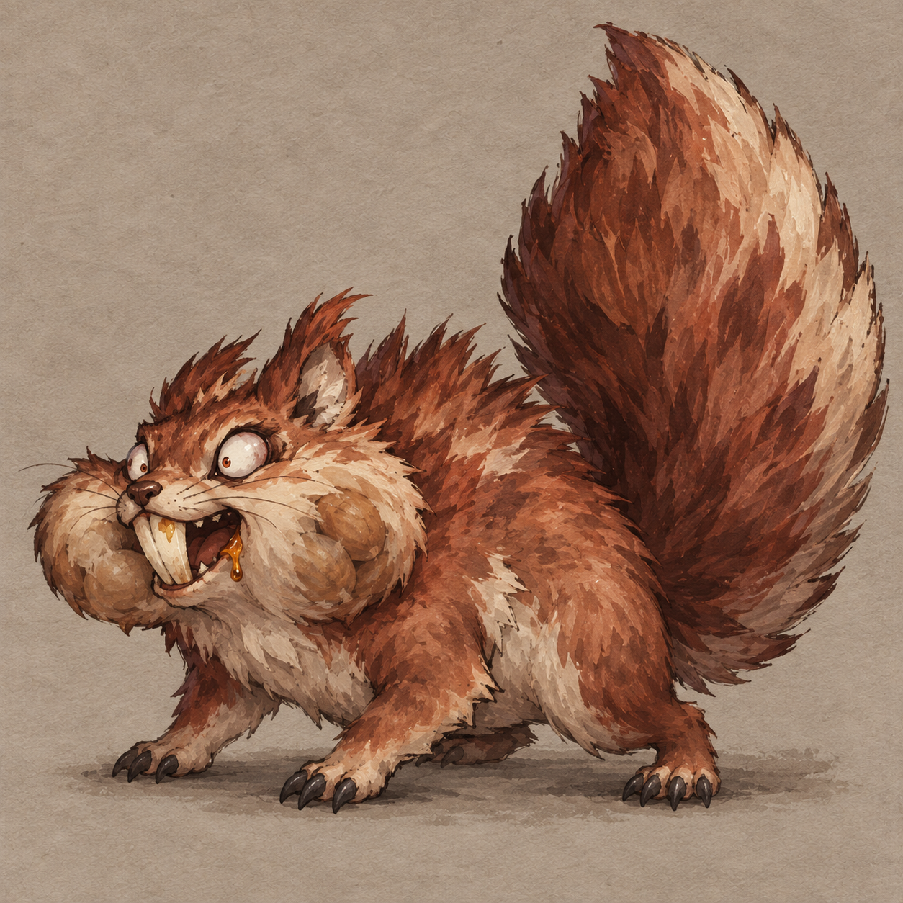
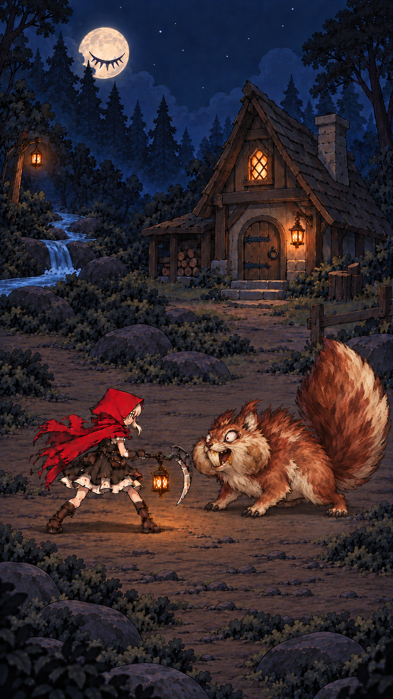
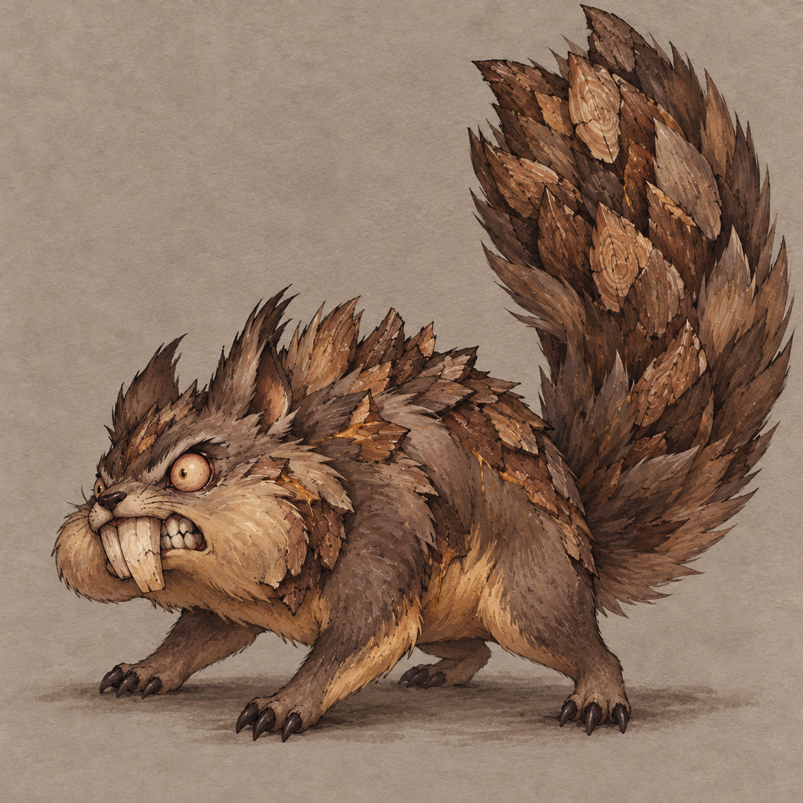
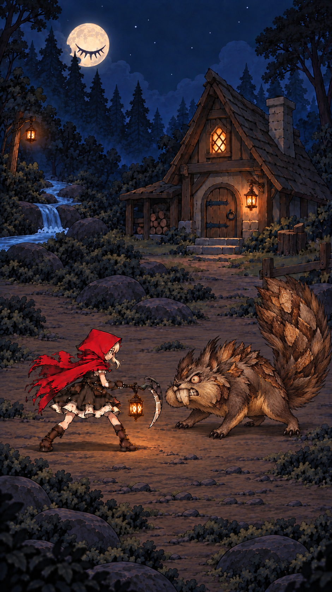
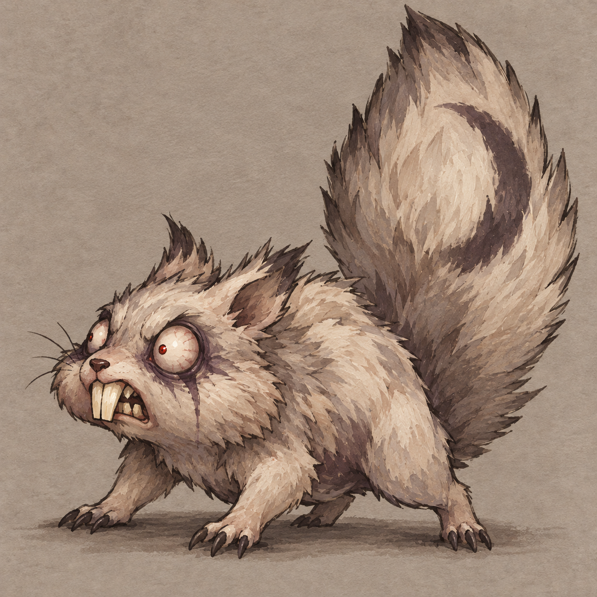
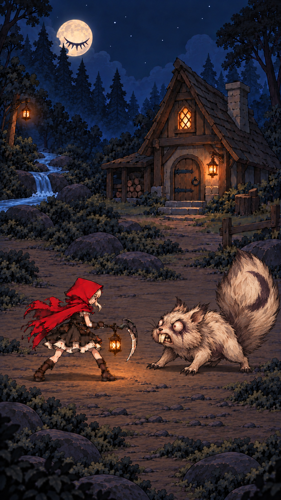

A · 囤食狂栗鼠囤食失控 / 栗红软毛鼓胀腮帮、针尖瞳孔、炸毛大尾。最直接的疯狂松鼠，兼顾滑稽与微恐。推荐优先考虑。适配重点：鼓腮和门牙要逐层适配原上下颌；腮帮与果浆暂为静态美术。
B · 啮木鼠啮木异化 / 树皮与木牙啃食者变成被啃食的木头。木质门牙、树皮尾鳞，三套中材质异化最明显。适配重点：尾鳞随原软尾弯曲，需按薄韧树皮处理，不能承诺每片独立运动。
C · 失眠月绒鼠永夜失眠 / 灰白绒毛永远无法闭眼的惊恐松鼠。暗眼圈、红色小瞳孔和偏心月牙尾纹，夜景识别最清楚。适配重点：月纹随尾形变；核对原 stun/victory 的眼槽染黑时间线。